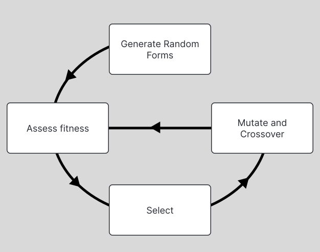

Genetic Algorithms
Why?
Natural selection is the most robust optimum-search algorithm in the universe. You and I are its products too1. Naturally, it is a very enticing model in fields that concern themselves primarily with solving problems by finding good solutions in a vast space of possible solutions.
Reinforcement Learning (RL) algorithms are predicated on the existence of a reward function. They suffer when the reward function is not well defined or not particularly talkative, and either ungodly amounts of compute, or extremely painstaking reward-function engineering by domain experts, or usually both (c.f. pretty much any deep-learning publication in RL) compensate for it.
Genetic algorithms, though weakly subsumed by the "RL" umbrella, are far easier to implement than a lot of flagship RL algorithms, far more robust to "moving-target" rewards where the nature of the required task evolves over time, and do relatively okay even under very quiet reward functions, such as when "time stayed alive" is the only metric available to assess a solution. They may also be less inclined to overfit to the fitness function.
How?
There is an "environment" or more generally a "fitness function" that individuals can interact with and be assessed by. At the very beginning, a large number of individuals are birthed with randomly assigned forms. What a "form" is and what the fitness function is, are very domain-specific questions. For example, if looking to improve how aerodynamic a certain vehicle part is, the "form" would be the physical structure of the part, and the fitness function, the metrics of testing this form in a physical fluid simulation. But in other settings, it could also be how an individual "acts" in an environment based on the sensory inputs it is given.
Two tasks, running essentially on loop, give the general struction of the algorithm:
-
Selection
When a "generation" or one iteration of the [form-generation, fitness assessment] cycle concludes, individuals with the best fitness are selected as prospect "parents" to the next generation. This could either be through assigning a higher probability to them when selecting parent forms, or discarding all the other forms entirely, or some combination of the two2.
-
Crossover and Mutation
We need to describe how one or more parent-forms inform the creation of a child-form. In a lot of cases, "sexual" reproduction is the model, where two parent forms are chosen and "combined" to produce a new form, as this takes a much wider sweep of the search space.
Crossover deals with how old forms will be combined to create new ones.
Sometimes, when convenient, this could be as simple as linearly-interpolating two parents by some constant:def produce_child(parent1, parent2, lerp_constant): child = parent1 * lerp_constant + (1 - lerp_constant) * parent2 return childMutation helps "explore" out into the space of all possible solutions, instead of being confined to the convex hull of the original starting population, which might not house any good solution at all. In the simplest form, it could be as simple as adding a small randomness evenly to the form generated by crossover:
def produce_and_mutate_child(parent1, parent2, lerp_constant, mutation_rate): mutant_form = generate_random_form() child = parent1 * lerp_constant + (1 - lerp_constant) * parent2 child = child + (mutant_form * mutation_rate) return childDescribing the crossover and mutation functions is an extremely involved process in any serious implementation, and this is usually the step where the most domain knowledge is injected into the algorithm. Whether the algorithm will find a really good solution, or a solution at all, is really sensitive to how well these functions are defined. The toy functions above are for illustrating the basic structure of this step.
When?
Whenever convenient! In the context of neural networks, in a lot of situations in, Gradient Descent is not an option at all, since GD requires that the fitness function be a differentiable function, and fitness in a lot of contexts is quite arbitrary, such as the sum of small rewards accrued over time, or duration of survival, etc. Even other RL algorithms that address such "black box fitness function" cases are exceedingly cumbersome to implement, and require an astronomical amount of individual-fitnessfunction interaction data.
But! It should be noted that GA are not a silver bullet, and often impractical in deep-neural-network settings, given the vastness of the search spaces, and sensitivity to small changes in form, and difficulty in conceptualizing mathematically meaningful crossover and mutation operations, and the computational load of keeping around and operating large numbers of individuals.
Who?
What do you mean?
What?
What??
1Probably didn't do that great of a job with me, but point stands.
2Often, when using "Survival of the fittest" as an arguemnt to defend generally evil behaviour, midwits operate with the notion that the "fittest" in the physical sense should have free reign over the weak, and therefore, subjugation is the natural order. But "fit" in the context of evolution refers to how well an individual fits the evolving needs of its environment. A gorilla is no more "fit" than a wittle baby kitten. Highly social species, in every single case, thrive when the strong consistently defend the weak. Even as far back in time as when the Neanderthals were still around, there is evidence that the less-able were taken care of dearly, and led long, happy lives amongst their tribe.